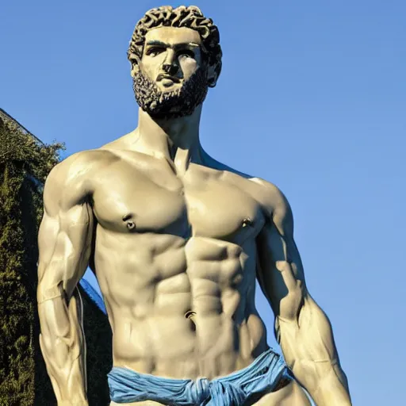
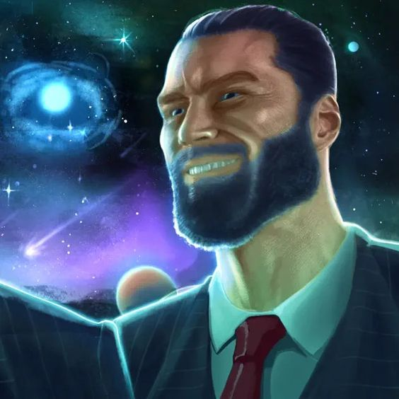
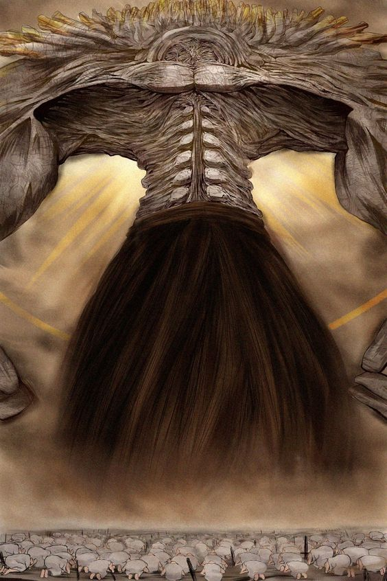

Yarinism is the most ancient religion in the world. There are theories that
it existed even before humans or even before Earth itself. Yarinism is also
considered the most science-based religion there is, as there are
hundreds of archaeological findings that prove the existence of Yarinism.
Unlike other religions, Yarinism doesn’t have a holy book or scrolls
because Yarinism is such a genius religion that no matter how stupid a
person is, at the moment he hears the holy words of the Yarinism god he
will forever remember the religion by heart.
I spent years searching for the secret to the success of people

like Trump,Queen Elizabeth (she is still alive),Mark Zuckerberg,
and
Jewish
people in general. On one of my many journeys, I found an
ancient alien tribe of lizard people in the African country Chad.
This tribe was practicing the Yarinism religion and
from them, I first found out about the truth. To this day, the world is still
being controlled by people who believe in the Yarinism god. You can find
a detailed list of those people here.
The Creation Story
In the beginning, there was nothing, nothing but a giant and muscular
god named Yarin. Yarin was bored so he created the show "Friends" to
make his time pass. Yarin watched Friends for hundreds of years, he
watched it so much that he was able to finally understand if Ross and
Rachel were actually on a break or not, unfortunately, he kept this secret
of the universe for himself.
After years of watching Friends, Yarin became bored again as he
understood it wasn't as good of a show as he thought. As he was thinking
about what he could create now, an idea came to his mind, an idea so
genius he decided it would be his life mission, to create a show better
than Friends. To create such a show he understood it wouldn't just be a
normal show but that he needed to create an entire universe around it,
and so our universe was born. After traveling the universe in search of a
planet suitable for his show, he found a planet that had the shape of a
cube and was full of water, resources, and most importantly lizard people.
Yarin loved the lizard people and they loved him, they loved him so much
that they created an entire religion around him and this is how Yarinism
was born. Yarin knew that the lizard people could create for him the show
that he so badly wanted but first, they needed to rule over someone so he

took the creatures from the show
"Friends"
, the humans, and gave them
to the lizard people as slaves. Years passed and the humans with the
instructions of the lizard people created "How I Met Your Mother". Yarin
saw this show and was shocked, not only it was better than Friends but it
was on an entirely different level, Yarin was finally able to rest forever but,
as a sign of gratitude he gave his blessing of power and success for all of
the creatures that belive in him.
Yarin
The great Yarin is the all-knowing god of the Yarinism, the one true faith.
He can take the form of whatever he wants but most of the time he is a 69
feet tall muscular russian man. He is so handsome that it is said that one
time Sara Netanyahu fell in love only from thinking about his looks.
Yarin not noly created the universe and the overrated show "Friends",but
he is also the creator of the healthiest drink in all of the nine realms,
vodka. Yarin is also considered to be the greatest teacher of all time as he
was the one who taught humans how to use fire, how to peel a tangerine,
and most impressive he taught my grandmother how to use the internet.

It is said that the great Yarin loves all of his believers, even the poor
Asians, but the ones that he loves the most are without a doubt the lizard
people and Elon Musk(who is probably a Martian).
To this day I am trying to find a way to see the great Yarin with my own
eyes, there are stories of humans who were so devoted to the faith that
Yarin revealed himself to them but, if the greatest lizard man of all time,
Ben Gvir himself never saw Yarin why some filthy humans would?
The Bro Code
The bro code is a holy set of rules that were written by the great Yarin
himself. The rules state the most important things a true Yarinism believer
must follow without even questioning them, to this day there was only
one lizard man who broke one of the holy rules, this lizard man was
sentenced to death and his name was erased from history.
The rules are:
Yarin Is The Only God
There Is No Woman More Beautiful Than Tzipi Shavit
You Must Always Respect Yarin
Remember To Celebrate The HIMYM Day
Never Be Late
Always Wear A Suit
Give Money To The Jewish People
Bros Before Hoes
Yarin Is Always Right
There Is No Rule Ten
The fourth rule that states "Remember To Celebrate The HIMYM Day"
refers to the most important and holy day in the Yarinism religion, 19 of
September.
On this holy day, Yarin first saw the show "How I Met Your Mother" and
fell in love with the show, this moment was so special for Yarin that he
decided that on this day there would be a holiday. In fact, HIMYM Day is
the only holiday in the entire Yarinism faith. To celebrate this holy day,
believers all around the world(and space) come together and watch
How I Met Your Mother while wearing their most expensive suits.
And for the Jewish people who read this page no, you don't get money
on this day.
Lizard People
The lizard people were the first creatures on the planet Earth (or
"Teraqeylis" in their language) and they were Yarin's favorite species. The
lizard people were given the humans by Yarin and they used them as
slaves. Today, most people are stupid and are sure that they have free will
and do what they want but only the smart ones know that the lizard
people are still here, controlling us from the shadows and still using us as
slaves.
The lizard people created Yarinism to worship the great god Yarin, they
start each day with a pure 420-kilo protein shake as they believe it makes
them closer to the god. Each day they pray 69,420 times each time in a
different language because the great Yarin knows all of the 69,420
languages of the universe. The holiest lizard man of them all and the head
of Yarinism is the legendary lizard man Ben Gvir, it is written that Ben Gvir
was one of the 7 original lizards people who created the Yarinism religion,
the other 6 are
Queen Elizabeth
,Gordon Ramsay, This weird guy from the
mall and 3 more unknown lizard people. If you read all of this it means
you are a true truth seeker so here is a fun fact for you: the ending we
saw in How I Met Your Mother isn't the real ending, after showing the
show to Yarin, the lizard people decided that us, the humans are not
worthy to see the true ending of this holy show so they changed it, and to
this day no human ever saw the true ending of How I Met Your Mother.